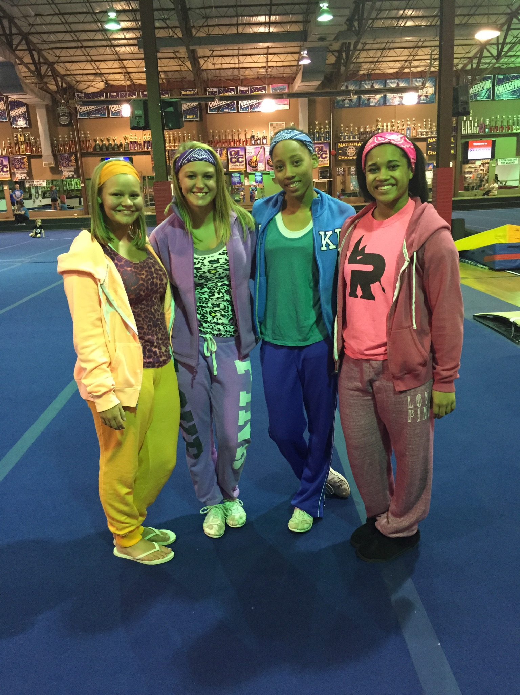
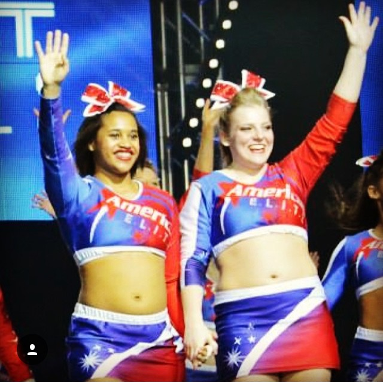

I first started cheerleading when I was around 11 years old. All of my friends were little league cheerleaders, and one of my best friends mentioned a new form of cheerleading that everyone was trying out. Competitve Cheerleading, from what she explained to me, wouldn't involve me just sitting on the sideline and shouting cheers. I decided to give it a try and joined a team.
When I first started cheering, I did not have many skills. Somewhat of a late bloomer from starting later than my peers, I worked extremely hard to catch up with my teammates and get the skills that they all had. However, as I continued to take classes and practice, I was able to learn and execute more skills than when I first started.

My biggest goal was to be on a level 5 team and compete at the cheerleading Worlds, the biggest cheerleading competition, which happens every April in Disney World. Only level 5 (or some level 6) teams are invited, and teams have to win an invitation. When I ended up moving from Pennsylvania to Ohio, I found a cheer gym that allowed me to develop my skills and reach my goal, three years in a row. American Elite.
Cheerleading has been a very big proponent in helping me to come out of my shell. Through cheerleading, I have made some of my best friends and have also learned how to work in teams. My favorite part of cheerleading was being able to test my limits in regards to making friends (I always used to be a shy kid), learning and practicing new skills, being a leader, and many others. I have made some of my lifelong friends through cheerleading and have found out who I am as a person through cheerleading.
 